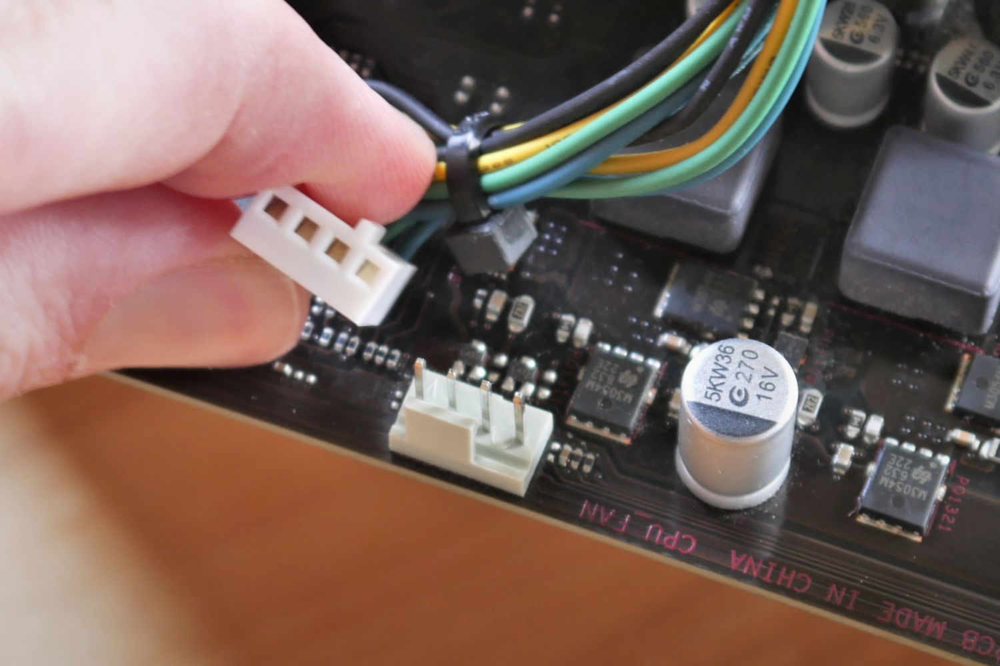

Módulo 10: Fans e Fluxo de Ar
As ventoinhas não servem apenas para enfeitar. Elas criam um caminho organizado para o ar frio entrar e o ar quente sair, mantendo a vida útil dos seus componentes.
🌬️ A Física do Calor
O ar quente é mais leve e sobe naturalmente. Por isso, a regra de ouro é: Ar frio entra pela frente/baixo e o Ar quente sai por trás/cima.

1. Direção do Fluxo de Ar
O PC só esfria bem se o ar for direcionado corretamente. Falha comum: fans puxando e empurrando ao mesmo tempo.
Passo a passo:
① Encontre as setas no corpo da fan.
② Verifique o lado que puxa o ar (normalmente o lado limpo).
③ Posicione as fans frontais/ inferiores para puxar ar frio.
④ Posicione as fans traseiras/ superiores para empurrar ar quente.
✓ A regra é sempre: frio entra pela frente/baixo e quente sai por trás/cima.
① Encontre as setas no corpo da fan.
② Verifique o lado que puxa o ar (normalmente o lado limpo).
③ Posicione as fans frontais/ inferiores para puxar ar frio.
④ Posicione as fans traseiras/ superiores para empurrar ar quente.
✓ A regra é sempre: frio entra pela frente/baixo e quente sai por trás/cima.

2. Fixação e Vibração
Ventoinhas soltas fazem barulho e não resfriam direito. A fixação correta é essencial.
Passo a passo:
① Posicione a fan no buraco do gabinete.
② Encaixe um parafuso em um canto.
③ Rosqueie o parafuso oposto em X.
④ Aperte os quatro parafusos até a fan ficar plana.
✓ Se a fan ficar torta, ela vibra e faz barulho.
① Posicione a fan no buraco do gabinete.
② Encaixe um parafuso em um canto.
③ Rosqueie o parafuso oposto em X.
④ Aperte os quatro parafusos até a fan ficar plana.
✓ Se a fan ficar torta, ela vibra e faz barulho.

3. Ligando os fios (SYS_FAN)
Mesmo se a fan estiver no lugar correto, ela só funciona se estiver conectada.
Passo a passo:
① Localize o conector SYS_FAN ou CHA_FAN na placa-mãe.
② Alinhe a fan com a guia de plástico.
③ Encaixe até firmar.
④ Se a fan for 3 pinos e o conector 4, deixe o pino vazio no lado correto.
✓ Confirme no BIOS se a fan aparece girando. Se não, a conexão está solta.
① Localize o conector SYS_FAN ou CHA_FAN na placa-mãe.
② Alinhe a fan com a guia de plástico.
③ Encaixe até firmar.
④ Se a fan for 3 pinos e o conector 4, deixe o pino vazio no lado correto.
✓ Confirme no BIOS se a fan aparece girando. Se não, a conexão está solta.
O PC está pronto para respirar?
Responda o quiz sobre refrigeração para liberar a conclusão do curso de hardware.